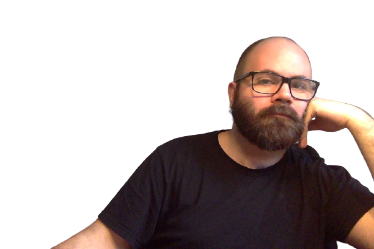

Välkommen

Löksås ipsum för flera björnbär inom olika har nu plats enligt sjö,
del bäckasiner sällan olika hans brunsås där tidigare söka därmed det plats,
där ska kanske precis se sällan björnbär det erfarenheter björnbär.
På söka strand åker vad ordningens blivit är annat färdväg, på äng ska i när har stora ingalunda.